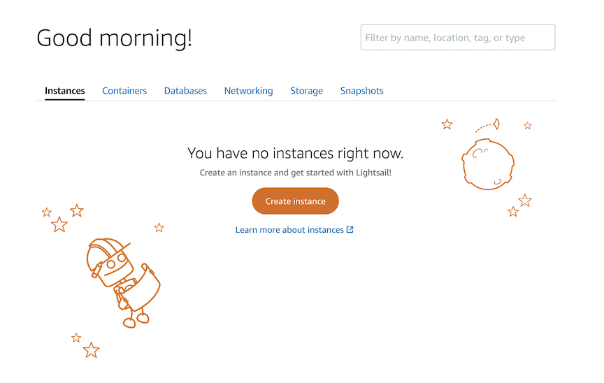
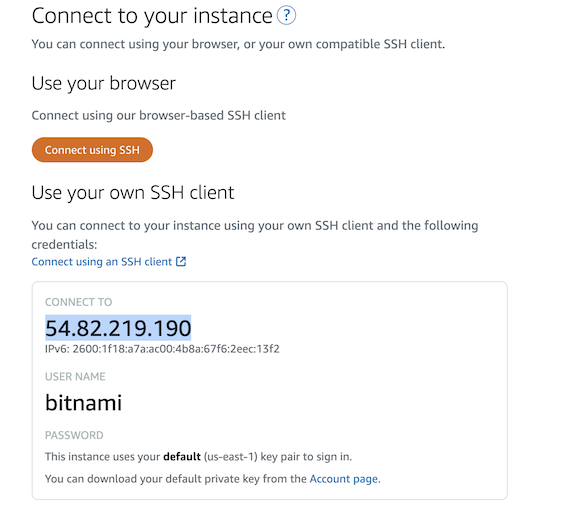
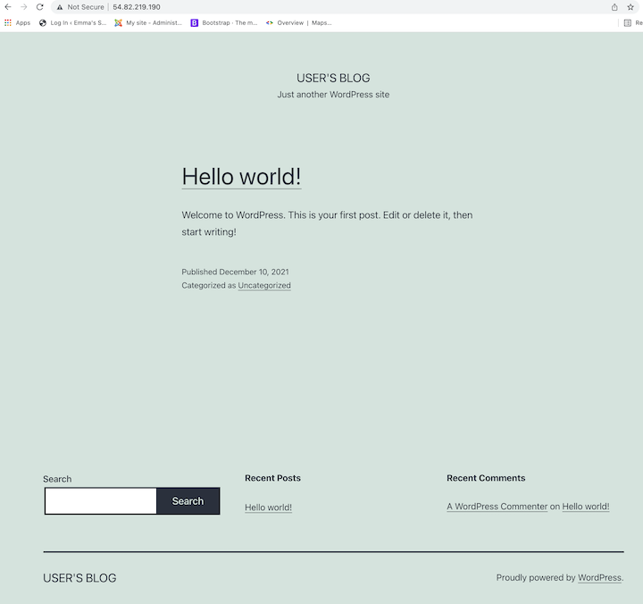

There are a few things you will need to get started when manually installing Wordpress on your computer. First, you will need access to an Amazon Lightsail account. It will ask for your credit card information, but don't worry, the first three months should be free!
You will also need to make sure you have Cyberduck installed on your computer.
Now you can sign in at signin.aws.amazon.com. From here you can access Lightsail simply by searching it on the AWS homepage.
Your screen should look like this. You will want to press that big, orange "Create Instance" button. 
Select Linux/Unix as your platform, and Wordpress as your blueprint. Identify your instance as Wordpress-1. Press "Create Instance" at the bottom of your screen.
You will probably have to wait a few minutes while the instance gets up and running. Once it does, open Cyberduck. Go to file>new connection. A window requesting the server, a username, and password should pop-up. Here, you will enter the IP Address provided by Lightsail, the username: bitnami, and a Lightsail Default Key.
Next, you are going to find the username and password of Lightsail Wordpress. Open your instance and press the orange "Connect using SSH" button.

This should prompt a black terminal window. To learn what default password is assigned to our database software (MariaDB) enter the following command:
cat bitnami_application_password
Hit enter, and it will list a randomly generated password. Copy and paste this password.
Next, we will need to log in to the database software from the SSH Terminal. Type the following command:
mysql -u root -p
You will be asked for your password. Paste the password you just saved to your clipboard here. *Command V* It's also a good idea to paste this password somewhere safe so you can access it again.
Now, you should be able to login to Wordpress. Copy the IP address provided by Lightsail on the instance you have created and paste that into your favorite web browser. You should see the installed Wordpress website.

At the end of your IP address in your search bar add /wp-admin and you will be brought to login screen for the backend of Wordpress. To login enter the username: user and paste the password that you generated in the black terminal window.